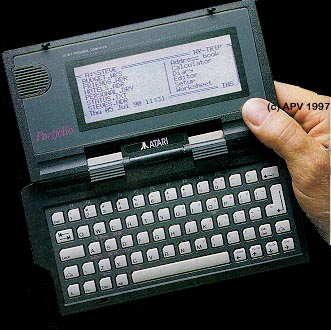

The Atari Portfolio Palmtop

Atari entered into the consumer
palmtop market with an innovative product call The Portfolio.
This computer was an IBM XT about the size of VHS video cassette at about
3/4's the height. It had an PC Card expansion slot (Not PCMCIA
compatible, that spec didn't exist formal for a few more years).
It came packages with MS-DOS 2.2 compatibility, Lotus 1-2-3 compatible
spreadsheet, a simple text processor, phone book with auto-dialing through
a built-in speaker, calendar and todo list. The
Portfolio had a strong following with several companies introducing software
cards, hard drives and floppy drives for it. Atari also had
a PC Card drive for IBM computers to allow a user the ability to write
to a PC and then remove it from the PC Card Drive connected to a PC and
then slide the card into the Portfolio and the system could read the PC
Card as a disk drive letter and access all the data.
In todays market with US Robotics PalmPilots and
HP 320LX palmtops which are all the rage, Atari probably could have faired
well with an more updated version of their Personal Organizer.
It may have been a matter that Atari introduced an excellent product at
the wrong time to a market they may not have been quite ready for it.
The Portfolio is still widely used and still quite popular in many circles
with numerous sites supporting it with system updates and software.
Hardware and accessories are still available from several vendors.